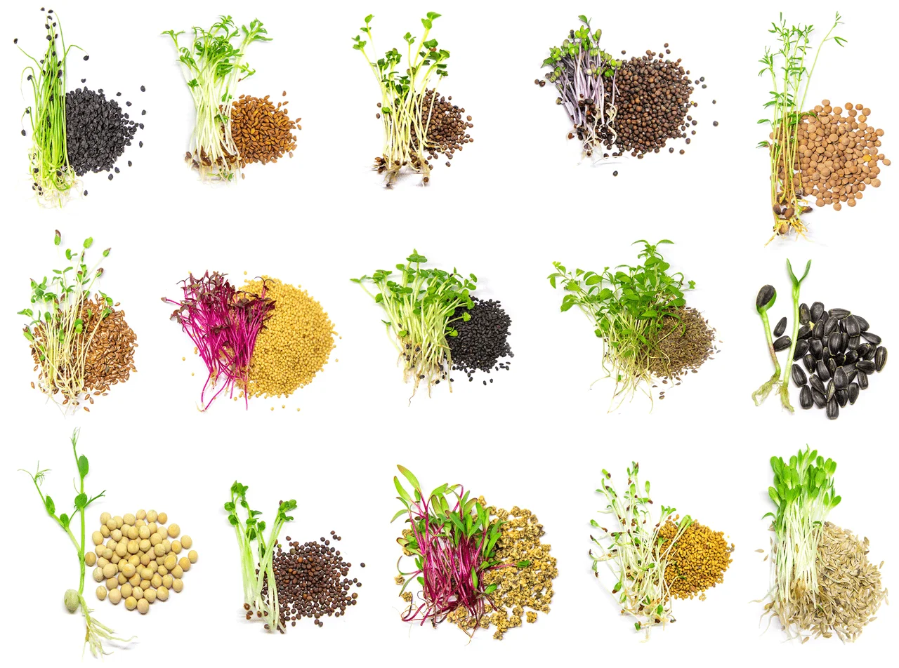

-
Amaranthaceae
- amarant
- cvekla
- blitva
- kvinoja
- spanać
-
Amaryllidaceae
- vlasac
- beli luk
- praziluk
- luk
-
Apiaceae
- šargarepa
- celer
- kopar
- komorač
-
Asteraceae
- cikorija
- endivija
- zelena salata
- radič
-
Brassicaceae
- rukola
- bbrokula
- kupus
- karfiol
- rotkvica
- potočarka
-
Brassicaceae
-
Lamiaceae
- metvica
- bosiljak
- ruzmarin
- žalfija
- origano
-
Poaceae
- ječam
- kukuruz
- pirinač
- ovas
- pšenična trava
- pasulj
- grašak
- slanutak
- sočivo